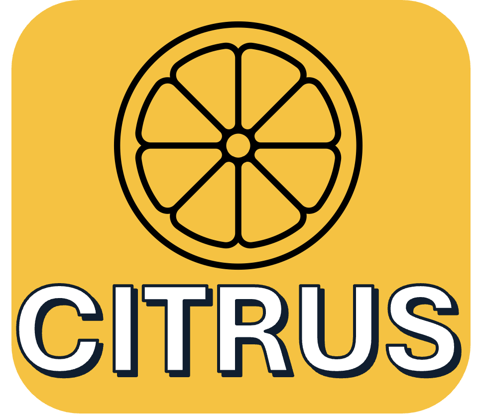

Vegetal Tissues / Plants & Crops Projects
A list of projects related to my research in plant science and agricultural applications.

CitRUS
Non-Contact Resonant Ultrasound Spectroscopy as an early water stress predictor for Citrus crops.
Learn more